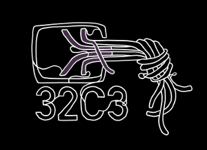

Der Curry Club auf dem 32c3
Gepostet am 5. Dez 15
von Lukas Epple

Der Curry Club wird auf dem 32. Chaos Communication Congress in Form einer Assembly sein! Wir haben schon begonnen, uns ein bisschen Programm für die vier Tage zu überlegen, die Planung läuft aktuell über die Mailingliste.